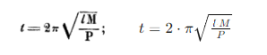
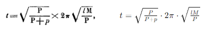
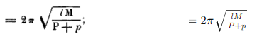
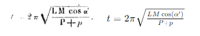

| Francese | Italiano |
|---|---|
| p.99 | p.99 |
|
Le pendule conique ou pendule de Watt est employé comme régulateur dans les machines à vapeur en raison de la propriété qu’il possède de se mouvoir, pour un angle donné des bras, avec une vitesse constante déterminée par la formule |
Il pendolo conico o pendolo di Watt è utilizzato come regolatore nelle macchine a vapore a causa della proprietà che possiede di muoversi, per un dato angolo dei bracci, con una velocità costante determinata dalla formula: |
|
dans laquelle l exprime la projection du bras sur l’axe vertical autour duquel la rotation s’opère. |
nella quale l esprime la proiezione del braccio sull'asse verticale intorno al quale avviene la rotazione. |
|
La longueur de cette projection, et par’suite la vitesse du pendule varient avec l’angle des bras, et réciproquement une variation dans la vitesse du moteur qui commande le pendule entraîne une variation de l’angle des bras. |
La lunghezza di questa proiezione, e di conseguenza la velocità del pendolo variano con l'angolo dei bracci, e viceversa una variazione nella velocità del motore che comanda il pendolo porta a una variazione dell'angolo dei bracci. |
|
C’est le mouvement de ces bras, s’élevant ou s’abaissant pour aller chercher la position appropriée à la vitesse de rotation que le moteur leur imprime, que l’on utilise dans les machines pour ouvrir ou fermer les orifices d’introduction de vapeur, ou faire varier la détente. |
È il movimento di questi bracci, che si sollevano o si abbassano per raggiungere la posizione appropriata alla velocità di rotazione impressa loro dal motore, che viene utilizzato nelle macchine per aprire o chiudere gli orifizi di introduzione del vapore, o variare la detenzione. |
|
Théoriquement on peut considérer l’élévation ou l’abaissement des bras du pendule comme le premier indice della rupture d’équilibre entre le travail moteur et le travail résistant de la machine et comme le premier emploi du travail positif ou négatif rendu disponible par suite de cette rupture. |
Teoricamente si può considerare l'innalzamento o l'abbassamento dei bracci del pendolo come il primo indice della rottura dell'equilibrio tra il lavoro motore e il lavoro resistente della macchina e come il primo impiego del lavoro positivo o negativo reso disponibile a seguito di questa rottura. |
|
En même temps qu’il signale ce défaut d’équilibre, le pendule tend à |
Nel mentre segnala questo difetto di equilibrio, il pendolo tende a |
| p.100 | p.100 |
|
le faire disparaître, en agissant sur la vafve d’admission de vapeur ou sur la détente, c’est-à-dire en modifiant le travail moteur. |
farlo scomparire, agendo sulla valvola di ammissione del vapore o sulla detentrice, cioè modificando il lavoro motore. |
Mais, en rétablissant l’équilibre, le pendule ne rétablit pas la vitesse : au contraire, à la position nouvelle qu’il a prise correspond forcément une vitesse différente, d’autant plus éloignée de la première que la variation du travail moteur ou du travail résistant a été plus considérable. |
Tuttavia, ristabilendo l'equilibrio, il pendolo non ripristina la velocità: al contrario, alla nuova posizione che ha assunto corrisponde inevitabilmente una velocità differente, tanto più distante dalla prima quanto più considerevole è stata la variazione del lavoro motore o del lavoro resistente. |
|
L’effet du pendule de Watt n’est donc pas de conserver à la machine une vitesse constante, mais de permettre à celle-ci de ne varier que dans des limites déterminées, et d’autant plus étendues que l’amplitude des oscillations est plus grande, et que dans la position moyenne l’angle des bras est plus ouvert. On ne peut, dans un pendule ordinaire, resserrer ces limites qu’en diminuant l’amplitude des oscillations et l’angle moyen des bras et par conséquent la course du manchon dans le passage d’une position extrême à l’autre. |
L'effetto del pendolo di Watt non è quindi quello di mantenere costante la velocità della macchina, ma di permettere che essa vari solo entro limiti determinati, e tanto più estesi quanto maggiore è l'ampiezza delle oscillazioni, e che nella posizione media l'angolo dei bracci è più aperto. Non si possono, in un pendolo ordinario, restringere questi limiti se non riducendo l'ampiezza delle oscillazioni e l'angolo medio dei bracci e quindi il percorso del manicotto nel passaggio da una posizione estrema all'altra. |
|
En isochronisant le pendule, c’est-à-dire en faisant en sorte que dans toutes les positions angulaires il ait la même vitesse, on peut augmenter jusqu’à une valeur quelconque l’amplitude des oscillations et l’angle des bras dans la position moyenne. On dispose donc, dans un pendule semblable, d’un travail réglant plus considérable, en désignant sous ce nom le produit de l’effort que Ton peut faire exercer par le manchon sur la manivelle de la valve sans changer la vitesse au delà d’une quantité déterminée, par le chemin que cet effort parcourt. |
Isocronizzando il pendolo, cioè facendo in modo che in tutte le posizioni angolari abbia la stessa velocità, si può aumentare fino a un qualsiasi valore l'ampiezza delle oscillazioni e l'angolo dei bracci nella posizione media. Si dispone quindi, in un pendolo simile, di un lavoro di regolazione più considerevole, indicando con questo termine il prodotto dello sforzo che si può far esercitare dal manicotto sulla manovella della valvola senza cambiare la velocità oltre una quantità determinata, per il percorso che questo sforzo compie. |
|
On peut voir clairement maintenant quelles sont, au point de vue de l’application du pendule à la régularisation des machines, les conséquences de l’isochronisme. La sensibilité de l’appareil, c’est-à-dire l’amplitude des mouvements produits par une même variation de vitesse, est indéfiniment augmentée. |
Ora possiamo vedere chiaramente quali sono, dal punto di vista dell'applicazione del pendolo alla regolazione delle macchine, le conseguenze dell'isocronismo. La sensibilità dell'apparecchio, cioè l'ampiezza dei movimenti prodotti da una stessa variazione di velocità, viene aumentata indefinitamente. |
|
Un régulateur absolument isochrone serait absolument instable, c’est-à-dire que la moindre variation de vitesse l’entraînerait d’une position extrême à l’autre. Il faut évidemment, dans la pratique, éviter d’atteindre à cet isochronisme, et par conséquent à cette instabilité absolue ; mais il est bon de pouvoir, en s’en approchant à volonté, augmenter dans la même proportion la sensibilité du pendule. |
Un regolatore assolutamente isocrono sarebbe assolutamente instabile, cioè la minima variazione di velocità lo porterebbe da una posizione estrema all'altra. È ovviamente necessario, nella pratica, evitare di raggiungere questo isocronismo, e quindi questa instabilità assoluta; ma è utile poter, avvicinandosi ad esso a piacere, aumentare nella stessa proporzione la sensibilità del pendolo. |
|
L’isochronisation du pendule permet indirectement d’en augmenter la promptitude. De ce que le travail réglant de l’appareil, à masse et à longueur égale, est plus considérable, il résulte que l’on peut pour un même travail réglant diminuer la longueur des bras, augmenter par conséquent leur vitesse, et faire qu’ils obéissent dans un temps plus court aux variations de vitesse de la machine. |
L'isocronizzazione del pendolo permette indirettamente di aumentarne la prontezza. Dal momento che il lavoro di regolazione dell'apparecchio, a parità di massa e lunghezza, è più considerevole, ne consegue che si può, per un medesimo lavoro di regolazione, diminuire la lunghezza dei bracci, aumentare di conseguenza la loro velocità, e fare sì che obbediscano in un tempo più breve alle variazioni di velocità della macchina. |
|
La disposition imaginée par M. Foucault permet de donner au pendule de Watt l’isochronisme absolu, pour un angle quelconque des boules, ou de s’en approcher autant que l’on veut, et d’augmenter par là, dans une proportion indéfinie, la sensibilité et la promptitude de cet appareil. Je vais d’abord exposer les considérations théoriques sur lesquelles re- |
La disposizione ideata da M. Foucault consente di conferire al pendolo di Watt l'isocronismo assoluto, per un qualsiasi angolo delle sfere, o di avvicinarsi ad esso quanto si desidera, e di aumentare così, in proporzione indefinita, la sensibilità e la prontezza di questo apparecchio. Innanzitutto esporrò le considerazioni teoriche su cui si basa |
| p.101 | p.101 |
|
pose la solution de M. Foucault. Puis je parlerai des applications qui en ont été faites dans mon établissement avec les directions et le concours de l’inventeur. |
la soluzione del Signor Foucault. Poi parlerò delle applicazioni che sono state fatte nella mia struttura con le indicazioni e la collaborazione dell'inventore. |
|
Un pendule conique se compose de deux bras articulés par une de leurs extrémités sur un axe horizontal commun fixé à un axe vertical mis en mouvement par la machine, et pourvus à l’autre extrémité d’une boule pesante. Deux autres tiges, articulées sur les premières, se réunissent par leur autre extrémité sur une douille ou manchon que l’arbre traverse, en lui servant de guide, mais en lui permettant de s’élever et de s’abaisser. Ces tiges forment avec la partie supérieure des bras un parallélogramme articulé, et traduisent les oscillations des bras en mouvements verticaux du manchon. Celui-ci est l’intermédiaire par lequel le mouvement est transmis à la valve ou à la détente de la machine. |
Un pendolo conico si compone di due bracci articolati da una delle loro estremità su un asse orizzontale comune fissato a un asse verticale messo in movimento dalla macchina, e dotati all'altra estremità di una sfera pesante. Due altre stanghette, articolate sulle prime, si riuniscono con la loro altra estremità su una boccola o manicotto che l'albero attraversa, servendogli da guida, ma consentendogli di sollevarsi e abbassarsi. Queste stanghette formano con la parte superiore dei bracci un parallelogramma articolato, e traducono le oscillazioni dei bracci in movimenti verticali del manicotto. Questo è l'intermediario attraverso il quale il movimento è trasmesso alla valvola o alla detentrice della macchina. |
|
Nous supposerons, pour simplifier la démonstration, que les tiges du parallélogramme sont articulées au milieu des bras, en sorte que les mouvements verticaux des boules et les mouvements verticaux du manchon soient égaux. |
Supporremo, per semplificare la dimostrazione, che le stanghette del parallelogramma siano articolate a metà dei bracci, in modo che i movimenti verticali delle sfere e i movimenti verticali del manicotto siano uguali. |
|
Si, faisant abstraction du poids du manchon, et en général des pièces centrées de l’appareil, c’est-à-dire des pièces qui, soumises à l’action de la pesanteur, ne le sont pas à celle de la force centrifuge, nous ne considérons que le poids des boules P, nous avons pour le temps d’une révolution du pendule : |
Se, tralasciando il peso del manicotto, e in generale dei pezzi centrali dell'apparecchio, cioè dei pezzi che, sottoposti all'azione della gravità, non sono sottoposti a quella della forza centrifuga, consideriamo solo il peso delle sfere P, abbiamo per il tempo di una rivoluzione del pendolo : |
|  | |
|
l étant la projection des bras sur l’axe vertical. |
dove l è la proiezione dei bracci sull'asse verticale. |
|
Si nous faisons entrer dans la formule le poids p du manchon, elle devient |
Se inseriamo nella formula il peso p del manicotto, essa diventa |
|
  |
|
|
soit L la longueur des bras, et ALFA l’angle des bras avec l’arbre vertical, nous avons: |
sia L la lunghezza dei bracci, e ALPHA l'angolo dei bracci rispetto all'albero verticale, abbiamo: |
|
l = L * cos(α), |
l = L * cos(α), |
|
p.102 |
p.102 |
|
Cos α étant variable, t l’est aussi, et, pour que t devienne une constante, il faut faire disparaître cos α, en l’introduisant au dénominateur de la fraction sous le radical, en remplaçant P + p par (P + p) cos(α). |
Cos α è variabile, anche t lo è, e affinché t diventi costante, è necessario eliminare cos α, introducendolo nel denominatore della frazione sotto il radicale, sostituendo P + p con (P + p) cos(α). |
|
C’est-à-dire qu’il faut faire varier le poids qui agit pour abaisser les boules, et qui, dans la supposition que nous avons faite de l’égalité de mouvement vertical des boules et du manchon, est égal à la somme des poids des boules et du manchon, proportionnellement au cosinus de l’angle des bras avec l’axe vertical. |
Cioè è necessario variare il peso che agisce per abbassare le sfere, e che, nell'ipotesi che abbiamo fatto dell'uguaglianza del movimento verticale delle sfere e del manicotto, è uguale alla somma dei pesi delle sfere e del manicotto, proporzionalmente al coseno dell'angolo dei bracci rispetto all'asse verticale. |
|
Il n’y a d’autre manière de faire varier ce poids, que d’en équilibrer une fraction variable, soit au moyen d’un ressort, soit au moyen d’un contre-poids. |
Non c'è altro modo per variare questo peso se non bilanciando una frazione variabile, sia mediante una molla, sia mediante un contrappeso. |
|
On peut choisir arbitrairement le point de départ de ces variations, ou la position angulaire des bras correspondante à un poids équilibrant nul. |
Possiamo scegliere arbitrariamente il punto di partenza di queste variazioni, o la posizione angolare dei bracci corrispondente a un peso equilibrante nullo. |
|
Si α' est l’angle des bras dans cette position, la vitesse normale du pendule, celle qu'il s’agit de lui conserver est : |
Se α' è l'angolo dei bracci in questa posizione, la velocità normale del pendolo, quella che deve essere conservata, è: |
|
 |
|
|
Lorsque α' devient α'' et L' cos α', L cos α'', il faut, pour que la valeur de t ne change pas, que P+p varie dans la même proportion, et que la fraction équilibrée de ce poids soit au poids total dans le même rapport que l’espace parcouru par le manchon dans le passage de l’angle α' à l’angle α'' est à sa course totale. |
Quando α' diventa α'' e L' cos α', L cos α'', affinché il valore di t non cambi, è necessario che P+p vari nella stessa proporzione, e che la frazione equilibrata di questo peso sia rispetto al peso totale nello stesso rapporto dello spazio percorso dal manicotto nel passaggio dall'angolo α' all'angolo α'' rispetto alla sua corsa totale. |
|
En d’autres termes, il faut opposer au manchon une force verticale nulle, lorsque celui-ci est dans sa position moyenne, égale à P+p, lorsqu’il est au sommet de sa course et que l’angle α = 90°, et qui entre ces deux valeurs extrêmes varie proportionnellement aux espaces parcourus par le manchon depuis sa position moyenne. |
In altre parole, è necessario opporre al manicotto una forza verticale nulla quando questo è nella sua posizione media, pari a P+p, quando è al massimo della sua corsa e l'angolo α = 90°, e che tra questi due valori estremi varia proporzionalmente agli spazi percorsi dal manicotto dalla sua posizione media. |
|
Cette force équilibrante doit être positive, c’est-à-dire opposée à P + p, lorsque les boules s’élèvent au-dessus de leur position moyenne, et négative lorsqu’elles descendent au-dessous, c’est-à-dire,' qu’alors elle ne se retranche plus de P + p, mais s’y ajoute. |
Questa forza equilibrante deve essere positiva, cioè opposta a P + p, quando le sfere si elevano al di sopra della loro posizione media, e negativa quando scendono al di sotto, cioè, in quel momento non si sottrae più da P + p, ma vi si aggiunge. |
|
Telle est, pour le pendule de Watt, la condition nécessaire de l'iso-chronisme, découverte par M, Léon Foucault. |
Tale è, per il pendolo di Watt, la condizione necessaria di iso-cronismo, scoperta da M. Léon Foucault. |
|
Voyons maintenant par quelle combinaison mécanique elle peut être realisee. |
Vediamo ora con quale combinazione meccanica può essere realizzata. |
|
PREMIERE SOLUTION |
PRIMA SOLUZIONE |
|
La solution la plus simple consiste dans l’emploi d’un levier coudé D O Z, dont une branche transmet au manchon la pression variable positive ou négative d’une masse Z fixée au sommet de l’autre branche.La relation |
La soluzione più semplice consiste nell'uso di una leva angolata DOZ, di cui un ramo trasmette al manicotto la pressione variabile positiva o negativa di una massa Z fissata alla sommità dell'altro ramo. La relazione |
|
p.103 |
p.103 |
|
est établie entre ces deux organes, dont l’un se meut suivant une ligne droite et l’autre suivant un arc en cercle, par l’intermédiaire d’une barre AO articulée au bout d’une barre oscillante AS. A, pour de petites variations, se mouvant suivant une ligne sensiblement horizontale, O se mouvra suivant une ligne verticale, et transmettra au manchon les efforts exercés par le bout D du levier coudé D O Z, avec la valeur qu’ils auraient si ce bras de levier avait une longueur égale à AO. (fig. 1) |
è stabilita tra questi due organi, di cui uno si muove lungo una linea retta e l'altro lungo un arco circolare, tramite una barra AO articolata all'estremità di una barra oscillante AS. A, per piccole variazioni, si muove lungo una linea sensibilmente orizzontale, O si muoverà lungo una linea verticale e trasmetterà al manicotto gli sforzi esercitati dall'estremità D della leva angolata DOZ, con il valore che avrebbero se questo braccio di leva avesse una lunghezza uguale ad AO. (fig. 1) |
|
Supposons cette longueur AO égale à la course totale du manicotto tra sa position moyenne et sa position extrême. All'estremità dell'altro ramo uguale della leva AOZ, fissiamo un peso P + p, facciamo l'angolo tra i due rami uguale a 90°, in modo che, quando il ramo è orizzontale, il ramo OZ sia verticale; facciamo corrispondere la posizione orizzontale del ramo OD alla posizione media del pendolo; in questo momento, la componente del peso P, diretta normalmente au |
Supponiamo che questa lunghezza AO sia uguale alla corsa totale del manicotto tra la sua posizione media e la sua posizione estrema. All'estremità dell'altro ramo uguale della leva AOZ, fissiamo un peso P + p, facciamo l'angolo tra i due rami uguale a 90°, in modo che, quando il ramo è orizzontale, il ramo OZ sia verticale; facciamo corrispondere la posizione orizzontale del ramo OD alla posizione media del pendolo; in questo momento, la componente del peso P, diretta normalmente a |
|
p.104 |
p.104 |
|
normalement au bras OZ, est nulle, et par conséquent l’action du bras OD sur le manchon est nulle aussi. Mais aussitôt que le bras OD quitte la position horizontale, le bras OZ quitte la position verticale, et une portion du poids Z proportionnelle au sinus de l’angle décrit par le bras OZ agit normalement à ce bras, avec un signe positif ou négatif, suivant que le poids penche d’un côté ou de l’autre, et est transmise intégralement par le bras OD et la barre AO sous le manchon. Pour de petits angles, le sinus de l’angle PHI est égal à la corde de l’arc décrit par le point Z, qui est elle-même égale à l’espace OO', parcouru par le manchon. |
normalmente sul braccio OZ, è nulla, e quindi l'azione del braccio OD sul manicotto è anch'essa nulla. Ma non appena il braccio OD lascia la posizione orizzontale, il braccio OZ lascia la posizione verticale, e una parte del peso Z proporzionale al seno dell'angolo descritto dal braccio OZ agisce normalmente su questo braccio, con un segno positivo o negativo, a seconda che il peso si inclini da un lato o dall'altro, e viene trasmessa integralmente dal braccio OD e dalla barra AO sotto il manicotto. Per piccoli angoli, il seno dell'angolo PHI è uguale alla corda dell'arco descritto dal punto Z, che è anch'essa uguale allo spazio OO', percorso dal manicotto. |
|
Le résultat de cette disposition est donc de transmettre sous le manchon une force proportionnelle aux espaces parcourus par lui depuis sa position moyenne, de remplir, par conséquent, les conditions de l’isochronisme, dans les limites des variations de l’angle PHI, dans lesquelles la corde de cet angle peut être confondue avec son sinus. |
Il risultato di questa disposizione è quindi di trasmettere sotto il manicotto una forza proporzionale agli spazi percorsi da esso dalla sua posizione media, di conseguenza, di soddisfare le condizioni dell'isocronismo, nei limiti delle variazioni dell'angolo PHI, in cui la corda di questo angolo può essere confusa con il suo seno. |
|
On peut évidemment, sans altérer ce résultat, faire varier les longueurs des bras de levier, pourvu que l’on fasse varier les poids en raison inverse, de manière à ce que les moments restent les mêmes. |
È ovviamente possibile, senza alterare questo risultato, variare le lunghezze dei bracci della leva, purché si varino i pesi in ragione inversa, in modo che i momenti rimangano gli stessi. |
|
A l’extrémité A de cette barre AO, qui, dans la solution précédente, sert à transmettre au manchon l’action du levier coudé, et suivant la direction variable que cette barre prend pour les différentes positions du manchon, M. Foucault applique une force constante = P+p. |
All'estremità A di questa barra AO, che, nella soluzione precedente, serve a trasmettere al manicotto l'azione della leva angolata, e seguendo la direzione variabile che questa barra assume per le diverse posizioni del manicotto, il signor Foucault applica una forza costante = P+p. |
|
Cette force, reportée au point O, peut être décomposée en deux, une horizontale sans effet sur le manchon, et une verticale qui lui est directement opposée et tend à le soulever. Cette force verticale, nulle lorsque la barre est horizontale, acquiert, lorsque le manchon s’élève ou s’abaisse, une valeur positive ou négative proportionnelle au sinus de l’angle n ou à l’espace parcouru par le manchon. La condition de l’isochronisme est donc ainsi remplie. |
Questa forza, riportata al punto O, può essere scomposta in due, una orizzontale senza effetto sul manicotto, e una verticale che gli è direttamente opposta e tende a sollevarlo. Questa forza verticale, nulla quando la barra è orizzontale, acquista, quando il manicotto si alza o si abbassa, un valore positivo o negativo proporzionale al seno dell'angolo n o allo spazio percorso dal manicotto. La condizione dell'isocronismo è quindi così soddisfatta. |
|
Cette force constante P + p qu’il faudrait exercer dans la direction variable AO', représente, lorsqu’elle est projetée sur la direction constante AO, une force variable (P+p) cos n, c’est-à-dire une force qui varie proportionnellement à la longueur de la ligne AO. |
Questa forza costante P + p che dovrebbe essere esercitata nella direzione variabile AO', rappresenta, quando è proiettata sulla direzione costante AO, una forza variabile (P+p) cos n, cioè una forza che varia proporzionalmente alla lunghezza della linea AO. |
|
Dès lors le problème mécanique d’exercer dans une direction variable une force constante P + p peut être remplacé par le problème plus simple d’exercer, dans une direction constante, une force variable (P+p) cos n. M. Foucault emploie pour cela le bras AS qui dans la première solution ne servait avec le concours de la barre D O qu’à assurer la verticalité de mouvement du point O, et qui dans la solution actuelle devient en outre |
Da quel momento, il problema meccanico di esercitare in una direzione variabile una forza costante P + p può essere sostituito dal problema più semplice di esercitare, in una direzione costante, una forza variabile (P+p) cos n. Il signor Foucault utilizza per questo il braccio AS che nella prima soluzione non serviva con l'aiuto della barra DO solo a garantire la verticalità del movimento del punto O, e che nella soluzione attuale diventa inoltre |
|
p.105 |
p.105 |
|
la branche supérieure d’un levier coudé A S K oscillant autour du point S et dont l’autre branche S K porte un contre-poids K. |
il braccio superiore di una leva angolata A S K oscillante intorno al punto S e il cui altro braccio S K porta un contrappeso K. |
|
La longueur de la tige S A est arbitraire, suffisante pourtant pour que l’arc décrit par le point A puisse être confondu avec une ligne droite. L’angle OMEGA de la branche S K avec la verticale est égal à l’angle A S O. |
La lunghezza della barra S A è arbitraria, tuttavia sufficiente affinché l'arco descritto dal punto A possa essere confuso con una linea retta. L'angolo OMEGA del braccio S K rispetto alla verticale è uguale all'angolo A S O. |
|
La composante du poids K dirigée normalement au bras SK et transmise au point A par le bras S A dans la direction AO, est égale à K sin OMEGA. Les petites variations de l’angle S A O, en deçà et au delà de 90°, sont trop faibles pour altérer cette valeur d’une manière sensible. |
La componente del peso K diretta normalmente al braccio SK e trasmessa al punto A dal braccio S A nella direzione AO, è uguale a K sin OMEGA. Le piccole variazioni dell'angolo S A O, al di sotto e al di sopra dei 90°, sono troppo piccole per alterare questo valore in modo sensibile. |
|
K sin OMEGA est une force variable comme la force (P+p) cos n, à laquelle nous désirons qu’elle soit égale. - |
K sin OMEGA è una forza variabile come la forza (P+p) cos n, alla quale desideriamo che sia uguale. - |
|
En raison de l’égalité de l’angle OMEGA et de l’angle ASO, cos n=sin OMEGA, en |
A causa dell'uguaglianza tra l'angolo OMEGA e l'angolo ASO, cos n=sin OMEGA, in |
|
p.106 |
p.106 |
|
en d’autres termes, la composante normale du poids K varie proportionnellement à la longueur de la ligne A O ; dès lors il suffit pour produire l’isochronisme de faire K=P+p. |
altre parole, la componente normale del peso K varia proporzionalmente alla lunghezza della linea A O; quindi è sufficiente per produrre l'isocronismo fare K=P+p. |
|
Je me bornerai pour le moment à indiquer ces deux solutions, me réservant de montrer dans une prochaine communication comment le même résultat peut être obtenu par des ressorts au lieu de poids. |
Per ora mi limiterò a indicare queste due soluzioni, riservandomi di mostrare in una prossima comunicazione come lo stesso risultato possa essere ottenuto mediante molle invece di pesi. |